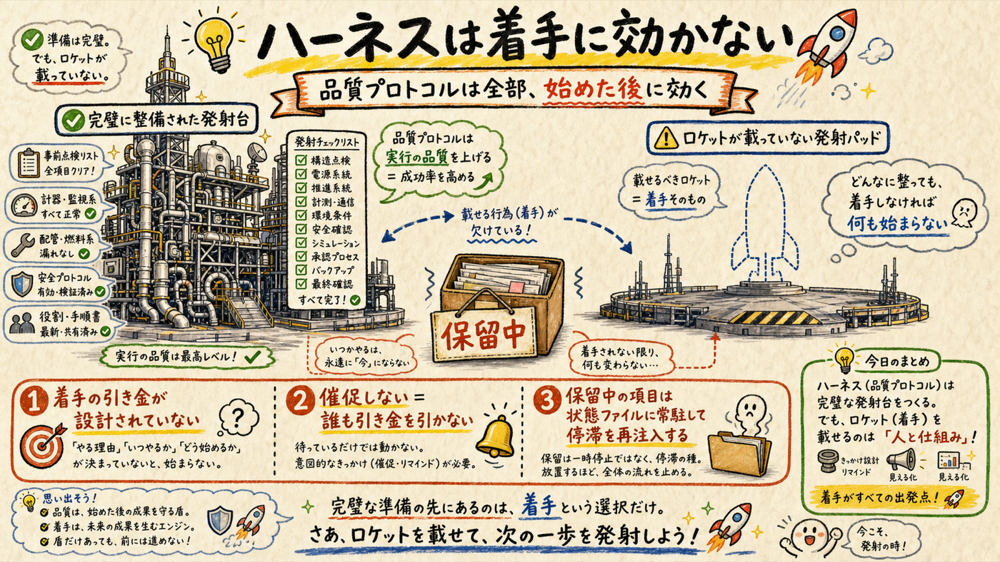
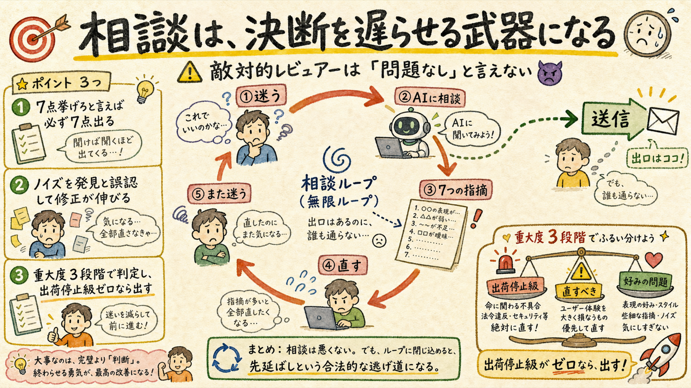
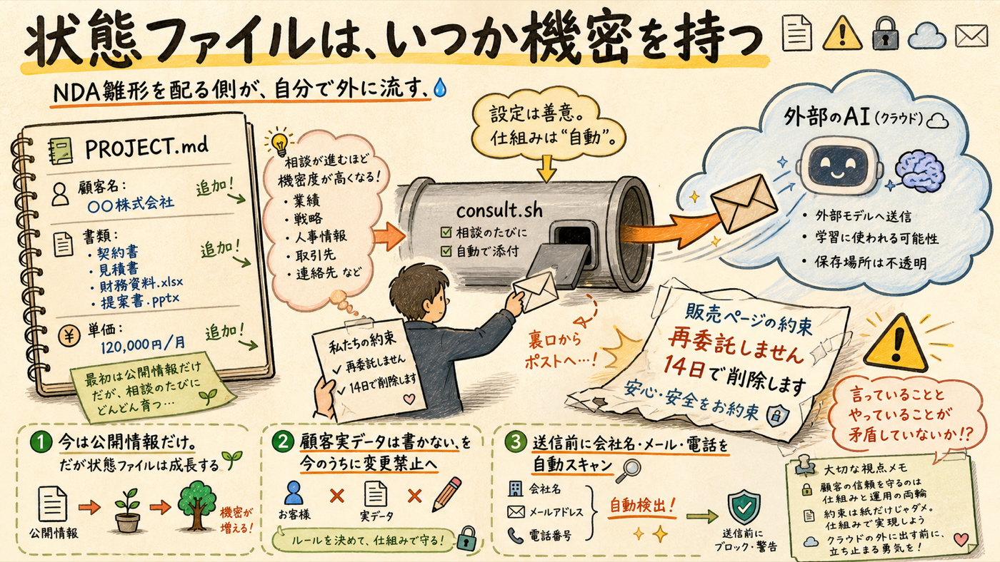
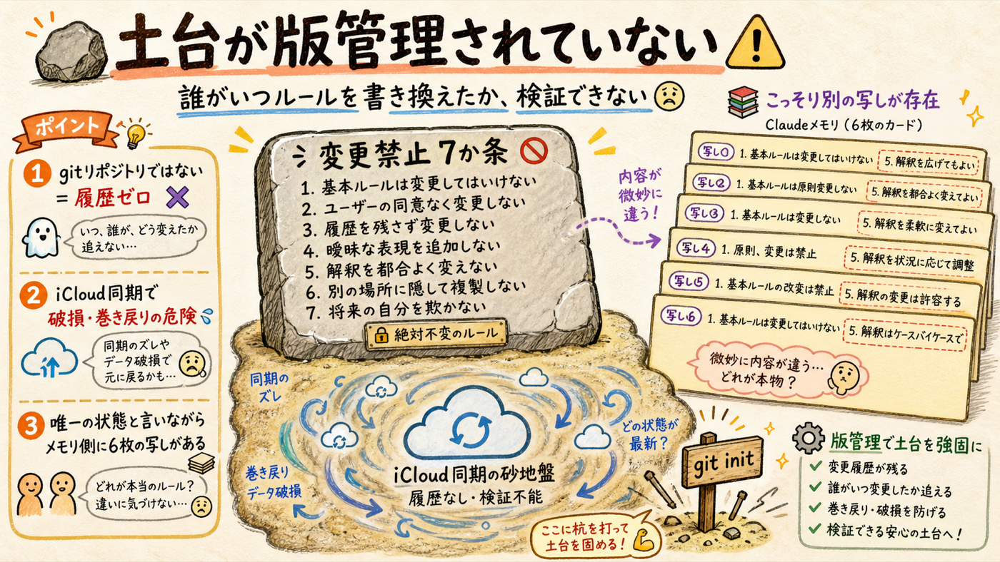

対象は「ハッカソン/ ディレクトリを Opus でも codex でも同品質で回す」ためのハーネス（PROJECT.md / AGENTS.md / CLAUDE.md / ops/consult.sh）。Claude Opus 4.8 の分析に、codex(gpt-5.6-sol) の独立敵対レビューをぶつけて統合した。一般論（「ドキュメントは陳腐化する」等）は排除してある。
品質プロトコルは全部、作業を「始めた後」にしか効かない。

接地・独立レビュー・完了前verify——AGENTS.md の品質プロトコル5項目は、すべて「作業を始めた後」の話だ。着手のトリガーはどこにも書かれていない。しかも変更禁止#3「催促しない・締切を作らない」により、誰も引き金を引かない設計が明文化されている。これは本人の意思で決めたことであり、正しい。だが引き金の設計が空欄のままなのは、意図ではなく単なる抜けだ。
発現シナリオ: 台帳化営業の送信（キット完成済・氏名記入のみ残）が「保留中」のまま PROJECT.md に常駐する。毎セッション、全モデルが冒頭でそれを読む。停滞が「前提」として毎回再注入される。半年後も同じ行が残っている。
「保留中」の各項目に、保留した日付と「再判断する条件」を必ず書く。期日ではなく条件（何が起きたら / 何を知ったら再開するか）。条件を書けない項目は「保留」ではなく「棄却」に落とす——リストから消す。ゾンビ項目を状態ファイルに住まわせない。
AIに聞くほど改善点が増える。そして永遠に発射しない。

consult.sh は「品質のための仕組み」に見える。だが決裁権は本人にしかない。迷う → codex に聞く → 7点返ってくる → 改善点が増える → また直す → まだ送らない。従量課金でコストだけが増える。
これは codex を「敵対的レビュアー」に固定した設計の副作用でもある。常に否定を出力するインセンティブが生まれ、「7点挙げろ」と言えば必ず7点出る。実際には十分な成果物に対して、ノイズレベルの指摘が「発見」として扱われ、修正ループが無限に伸びる。批判の偽陽性だ。
技術的にクリティカル。顧客が付いてから考えるのでは遅い。

今の PROJECT.md には公開可能な情報しか入っていない。だから見えない。だが状態ファイルは成長する。
発現シナリオ: 台帳化のモニター客がつく → 顧客名・書類の内容・単価が PROJECT.md に書かれる → consult.sh が毎回それを丸ごと外部モデルへ送信する。販売ページには「再委託しません／データは14日で削除します」と明記してある。運用がその約束と矛盾する。
変更禁止を守る仕組みが、変更禁止を守れない場所に置かれている。

今日その場で確認した事実を2つ。
ハッカソン/ は git リポジトリではない（fatal: not a git repository）。履歴がゼロ。どのモデルが善意で「変更禁止」を書き換えても、誰がいつ変えたか検証できない。加えて iCloud Drive 上なので、同期競合による破損・巻き戻り、別端末での未ダウンロード（dataless）ファイルを空として読む事故があり得る。koji-map-business.md / sell-before-build-strategy.md / tochijihai-hackathon-2026.md 他）が状態を保持している。PROJECT.md は「唯一の状態ファイル」を名乗るが、codex はメモリ側を読めない。乖離を検知する手段もない。「独立レビュー」ではなく「情報が欠けたレビュー」になる。最小の対策: git init して PROJECT.md / AGENTS.md / ops/ だけをコミット対象にする（osanpo-safety等は別管理）。1コマンドで終わる。さらに、セッション終了時に「メモリとPROJECT.mdの差分チェック」を AGENTS.md に1行手順として固定する。
「最大の敵はモデル性能ではなく、全モデルが同じ誤った前提と壊れた検証器を共有して『全員一致・全件green』になること」
| # | 盲点 | なぜ気づかないか | 発現シナリオ | 最小の対策 |
|---|---|---|---|---|
| 1 | 単一状態＝単一障害点 | 一貫性を品質と誤認する | PROJECT.md の誤記が自動添付され、全モデルの独立性を消す | 状態を添付しない「盲検レビュー」を定期実施 |
| 2 | 合意の出来レース化 | 後手モデルが先手の論理にアンカーされる | codex が Claude 案の欠陥探索ではなく「説明の補強」をする | 双方の初稿を封印し、後から差分照合 |
| 3 | 変更禁止の憲法化 | 過去の事故防止が「永続的な正義」に見える | 前提が消えても迂回実装だけが累積する | 各項目に根拠・期限・解除試験を必須化 |
| 4 | 検証器との共進化 | green が安心を生む | 実装とverifyが同じ誤解を符号化し、旧版やキャッシュだけを正常判定 | 外部カナリア、nonce、意図的破壊による検証器テスト |
| 5 | 事実台帳の推論ロンダリング | 要約の反復で、仮説が「事実の文体」になる | 出典・観測日を失った市場判断が、全戦略を拘束する | 出典・観測日・確度・失効日なしは「事実」登録禁止 |
| 6 | ハーネスが可処分時間を捕食 | 整備作業は進捗感が強い | 週20hのうち協議・記録・同期に5h以上消え、出荷量が落ちる | 運用税を計測し15%超で機能凍結。3回繰り返す作業だけ自動化 |
| 7 | サイレント劣化が観測不能 | 同じモデル名・終了コードなら同等だと思う | alias更新・添付切断・コンテキスト圧縮で consult 品質だけ低下 | model ID / prompt hash / 添付byte数を記録し、固定課題の週次差分を警報化 |
※ codex CLI（model=gpt-5.6-sol）に PROJECT.md / AGENTS.md の要約を添付して 2026-07-12 に実施。原文要旨は output/explainer-harness-blindspots/context.md に保存。
#6 が痛い: 週20hのうち、ハーネス整備そのものに何時間使ったか。これは「運用税」であり、出荷量とトレードオフの関係にある。ハーネスは薄いほど良い——という前提が、ハーネスを作っている最中は一番見えなくなる。
全部やっても1時間かからない。逆に、これ以上ハーネスを厚くしない。
| # | 打ち手 | コスト | 効く盲点 |
|---|---|---|---|
| 1 | git init して PROJECT.md / AGENTS.md / ops/ をコミット | 5分 | 04・codex#3（履歴があれば「解除試験」が可能になる） |
| 2 | 変更禁止に「顧客実データを状態ファイルに書かない」を追加 | 5分 | 03 |
| 3 | 「保留中」の各項に 保留日＋再判断条件 を付ける。条件を書けないものは棄却 | 15分 | 01 |
| 4 | consult の定型に 重大度3段階 を組み込む（出荷停止級ゼロ＝出荷可） | 10分 | 02・codex#6 |
| 5 | 事実台帳の各行に 観測日と失効日 を付ける | 20分 | codex#5 |
ops/consult.log に自動追記（codex#7）